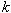
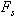
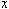
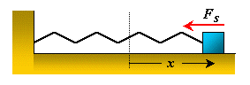
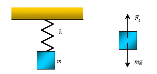
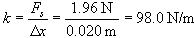
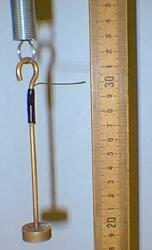
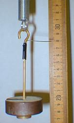

|
|

|
124 Physics Lab: Hooke's Law and Simple Harmonic Motion
|
Lab Overview |
Return to Physics 124 Labs
Purpose
The purpose of this lab experiment is to study the behavior of springs in
static and dynamic situations. We will determine the spring constant,
 ,
for an individual spring using both Hooke's Law and the
properties of an oscillating spring system. It is also possible to
study the effects, if any, that amplitude has on the period of a body
experiencing simple harmonic motion.
Background
If an applied force varies linearly with position, the force can be defined as
where
is called the force constant. Once such physical system where
this force exists is with a common helical spring acting on a body. If the spring is
stretched or compressed a small distance from its equilibrium position,
the spring will exert a force on the body given by Hooke's Law, namely
where

is known as the spring force. Here the constant of proportionality,
,
is the known as the spring constant, and

is the displacement of the body from its equilibrium position (at
= 0 ).
The spring constant is an indication of the spring's stiffness. A large value for
indicates that the spring is stiff. A low value for
means the spring is soft. Generally speaking, springs with large
values can balance larger forces than springs with low
values.
The negative sign in Equation 1 indicates that the direction of
is always opposite the direction of the displacement. This implies that
the spring force is a restoring force. In other words, the spring
force always acts to restore, or return, the body to the equilibrium
position regardless of the direction of the displacement, as shown in
Figures 1a - 1c.
| |
| |

|
|
|
|
| |
Figure 1a.When the displacement is to the right
( > 0) the spring force is directed
to the left ( < 0).
|
|
Figure 1b.When the displacement is to the left
( < 0) the spring force is directed
to the right ( > 0).
|
|
| |
| |
|
|
| |
Figure 1c. In both cases shown in Figures 1a and 1b,
the effect of the
spring force is to return the system to the equilibrium position.
At this position,
= 0
and the spring is unstretched, signifying
= 0.
|
|
When a mass,
,
is suspended from a spring and the system is allowed to reach equilibrium,
as shown in Figure 2, Newton's Second Law tells us that the magnitude
of the spring force equals the weight of the body,
.
Therefore, if we know the mass of a body at equilibrium, we can determine
the spring force acting on the body.
| |
|

|
|
Figure 2. A body of mass,
,
is suspended from a spring having a spring constant,
.
If the system is in equilibrium the spring force is balanced by the
weight of the body.
|
Equation 1 applies to springs that are initially unstretched. When the body
undergoes an arbitrary displacement from some initial position,
,
to some final position,
,
this equation can be written as
where
is the body's displacement. For example in Figure 3, the initial position of
the body is 0.300m. When a 0.200kg mass is added to the mass pan, the spring
is stretched to the 0.320m-mark as shown in Figure 4. Therefore the displacement
is 0.020m. The spring force must balance the weight of the added mass
( = 1.96N).
We can then determine the spring constant for this spring:
 .
| |
| |

|
|

|
|
|
Figure 3.The initial position of the body attached to the spring
is 0.300 m as measured by the meter stick.
|
|
Figure 4.The body's mass is increased by 0.200 kg and the spring
force must increase to balance the added weight. Here the spring is
stretched to the 0.320-m mark and the spring constant is calculated to
be 98.0 N/m (see text).
|
|
If the body in Figure 4 is displaced from its equilibrium position some
maximum distance,
,
and then released, it will oscillate about the equilibrium position. The body
will move back and forth between the positions
and
. When the mass travels from the
maximum displacement
to the minimum displacement
and then back to the position
,
we say that the mass has moved through one cycle, or oscillation.
When an oscillating mass (as in the case of a mass bouncing on a spring)
experiences a force that is linearly proportional to its displacement but
in the opposite direction, the resulting motion is known as simple harmonic
motion. This motion is periodic, meaning the displacement,
velocity and acceleration all vary sinusoidally. The time required for the
body to complete one oscillation is defined as the period,
,
and is given by
Notice the period is dependent only upon the mass of the
oscillating body and the spring constant,
.
As the stiffness of the spring increases (that is, as
increases), the period decreases which has the effect of increasing the
body's average velocity. Conversely, an increase in the body's mass
means the period will also increase, thereby requiring more time for the
body to move through one oscillation. It should be noted that the period of
motion is independent of the amplitude of the oscillations.
Objectives
- Use the apparatus and what you know about Hooke's Law to determine the
spring constant,
,
of your spring. Remember, do not suspend more than 1000! from your
spring!
- Use the apparatus and what you know about oscillating spring-mass
systems to determine the
spring constant,
,
of your spring. Remember, do not suspend more than 1000! from your
spring!
- xxx
Equipment and setup
- (Figure 5.) The experimental setup
- (Figure 6.) A common helical spring
- (Figure 7.) Support stand and hook
- (Figure 8.) Mass pan
- (Figure 9.) Various slotted masses. Do not suspend more than
1000 grams from the springs; doing so will deform the springs!
- (Figure 10.) Various hooked masses. Do not suspend more than
1000 grams from the springs; doing so will deform the springs!
- (Figures 11 and 12.) The
computer
timing devices shown in these
figures are found on our physics lab web page
(Figure 11)
and also in the Lab Programs folder found on the computer desk tops of
each laboratory computer (Figure 12).
- (Figure 13.) A triple-beam balance
- Meter stick
|
[Click on images to enlarge.]
|
Hints and Cautions
- Caution!!! Only use masses 1000 grams and less!
Doing so will over-stretch the springs, which will permanently
deform them and render them useless.
Online Assistance
- Stopwatch
timer
- Adding a trendline
to an Excel plot
- Adding a non-linear
trendline to an Excel plot
- Create plots of two
data series on one graph
- Fitting multiple
curves (trendlines) to one data set
- Clemson Physics Lab Tutorials
- Measurement
uncertainties
- Using Excel
- Graphing data
using Excel
- Using error
bars in Excel
Lab Report Template
Each lab group should
download the Lab Report Template
and fill in the relevant information
as you perform the experiment. Each person in the group
should print-out the Questions section and answer them individually.
Since each lab group will turn in an electronic copy of the lab report,
be sure to rename the lab report template file. The naming convention is as
follows:
[Table Number][Short Experiment Name].doc.
For example the group at lab
table #5 working on the Ideal Gas Law experiment would rename their template file
as "5 Gas Law.doc".
Nudge Questions
These Nudge Questions are to
be answered by your group and checked by your TA as you do the lab. They
should be answered in your lab notebook.
Objective 1 Nudges
- Which set of masses will you use for this experiment, the hooked masses
or the slotted ones? Why?
- How will you determine the position,
,
of the hanging mass?
- What is the uncertainty in the position measurements?
- In order to conduct the experiment properly, must you consider the position
or the change in the position; or both?
- How many data points will you take for this experiment?
- What mass values will you use for this experiment? Remember, do not
suspend more than 1000g from your spring!
- What is the uncertainty in the mass measurements?
- How will you measure the spring force,
?
- What quantities will you plot in order to determine,
?
- What value did you find for
?
- What are your units of ?
- From your data and graph, what is the minimum mass,
,
necessary to stretch the spring?
- Does the best-fit line of your graph fall within the data points' error
bars?
- What is the uncertainty in your value for
?
Objective 2 Nudges
- Which set of masses will you use for this experiment, the hooked masses
or the slotted ones? Why?
- What oscillation amplitude will you use for this experiment? How is this
determined?
- Does the value of the oscillation amplitude affect your results? (See
Objective 2.)
- How will you determine the period,
,
of the oscillating spring-mass system?
- How will you decrease the uncertainty in the period measurement?
- What is the uncertainty in the period measurements?
- How many data points will you take for this experiment?
- What mass values will you use for this experiment? Remember, do not
suspend more than 1000g from your spring!
- What is the uncertainty in the mass measurements?
- What quantities will you plot in order to determine,
?
- What value did you find for
?
- What are your units of ?
- Does the best-fit line of your graph fall within the data points' error
bars?
- What is the uncertainty in your value for
?
- How does the value for ,
found from Objective 1, compare to this value?
- Which value is more accurate and why?
Objective 3 Nudges
 , ,
- xxx
Questions
These Questions are also found in the lab write-up template. They must be answered by
each individual of the group. This is not a team activity. Each person should
attach their own copy to the lab report just prior to handing in the lab to your
TA.
- From your data and graph in Objective 1, what is the minimum mass,
, necessary to stretch the spring?
- Does Hooke's Law apply to an oscillating spring-mass system?
If so, what equipment would you need and what parameters would you
record in order to take data for a Hooke's Law experiment when the spring-mass
system is oscillating?
- When a box of unknown mass is placed into the trunk of a car, both rear
shocks are compressed a distance of 7.0cm. If we assume the two rear
shocks are made from springs, each with a spring constant value of
= 35,000N/m,
what is the mass of the box? (Assume g = 9.80m/s2).
- Mass is added to a vertically hanging rubber band and the displacement
is measured with the addition of each mass. The recorded data is
displayed in the table below. Based on this data, does a rubber band
obey Hooke's Law? Explain why or why not?
|
Rubber Band Experiment
|
Mass Added
(kg)
|
Displacement, x
(m)
|
|
0.100
|
0.10
|
|
0.200
|
0.20
|
|
0.300
|
0.35
|
|
0.400
|
0.55
|
|
0.500
|
0.80
|
- A toy maker requires a spring mechanism to drive an attached component with a
period of 0.50s. If the mass of the component is 10g, what must the value
of the spring constant, , be?
TA Notes
- In Objective 1, you may wish to specifically ask the students to
determine the minimum mass,
,
necessary to stretch the spring. (See
Nudge Questions and Questions
sections.)
Data, Results and Graphs
Answers to Questions
Lab Manual
CUPOL Experiments
As of now, there are no
CUPOL experiments
associated with this experiment.
If you have a question or comment, send an e-mail to Lab Coordiantor:
Jerry Hester
Lab Overview |
Return to Physics 124 Labs
|
|